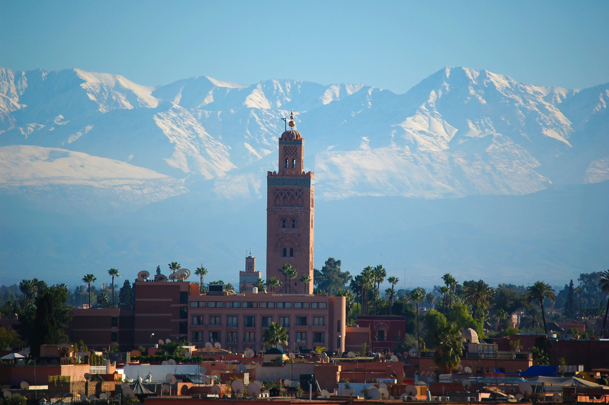

par Safiya TIFAOUI | 28 Septembre 2024 | 454 mots
De nouveaux défis technologiques attendent Maroc Telecom en 2024, toute en offrant des opportunités passionnantes, grâce à l’essor des innovations numériques et à son expansion continue en Afrique.
Alors après avoir réglé le litige pour des pratiques anticoncurrentielles qui a été réalisé en février 2020 avec l’entreprise Inwi qui est Wana Corporation pour 6,4 milliards de dirhams, Maroc Telecom a connu unepériode boursière plus bénéfique, ce qui stabilisé l’entreprise.
De plus bien que le résultat de l’entreprise est légèrement baisse, elle conserve une marge d’EBITDA (Earnings Before Internet, Taxes, Depreciation, and Amortization) de 51% et des bénéfiques répétitifs de 6 milliards de dirhams. La fibre optique, la 5G et la croissance en Afrique égalise la diminution des revenus liés aux télécommunications.
Pour 2024-2025, les analytes d’Attijari Global Research ont prévues une légère augmentation des revenus et une stabilité des bénéfices, malgré la conséquence de l’amende. Maroc Telecom devrait améliorer sa visibilité à partir de fin 2024, avec une efficacité à 6% pour 2025.
En 2023 au Maroc, un tremblement de terre à secouer le sud-ouest de Marrakech avec une magnitude de 6,8 causent de nombreux dégâts après son passage il y a eu 2 960 morts et 6 125 blessés. Le tremblement de terre à causer d’importance secousses ce qui a provoqué l’effondrement de nombreux bâtiments, et c’est fait ressentir dans plusieurs régions aux Maroc mais aussi dans le sud de l’Espagne et sud du Portugal. Le Maroc a été plongé dans un deuil de 3 jours, ce drame nous a tous impacter.
Après cela Maroc Telecom c’est engager à aider financièrement à la reconstruction. De plus des dons de son personnel, le groupe s’engage à la reconstruction et à la réhabilitation des zones sinistrées pour un montant de 700 millions de dirhams. L’entreprise Maroc Telecom montre son engagement citoyen en faisant se dons démontrant ainsi sa volonté d’agir pour soutenir les efforts de reconstruction et de réhabilitation.

Le 13 juillet au 21 aout 2024, Maroc Telecom à fêter sa vingtième édition du « Festival des Plages ». Cette édition s’est tenue dans 6 destination balnéaire du pays comme Tanger, Nador. Le concert met en avant la diversité du répertoire musicale du Maroc en recevant un grand nombre de musiciens et offrant pas moins de 100 concerts.
Le festival est accessible à tous, il est entièrement gratuit, offrant a tout le monde la possibilité d’en profiter cela permet de monter que Maroc Telecoms’engage à promouvoir l’inclusion social à travers la musique.